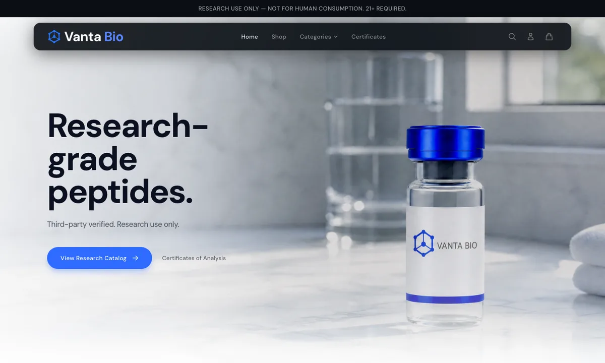
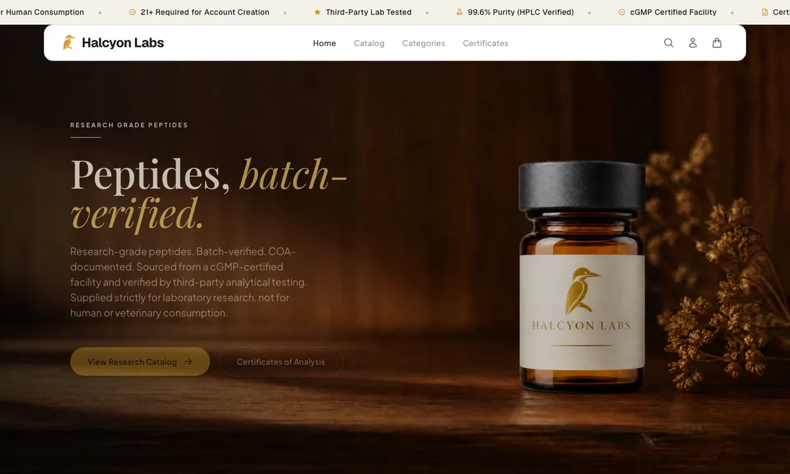
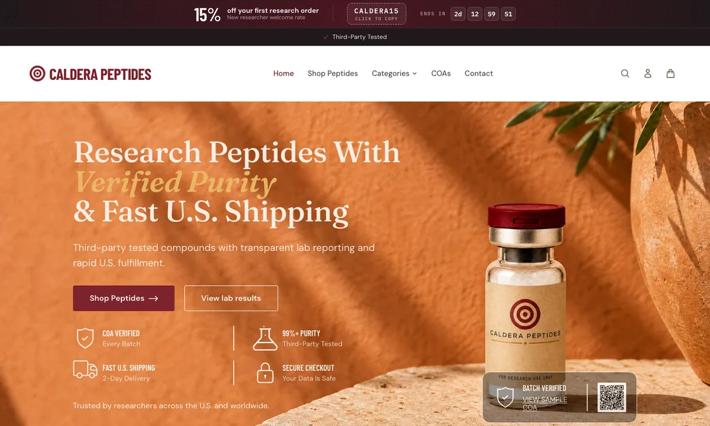
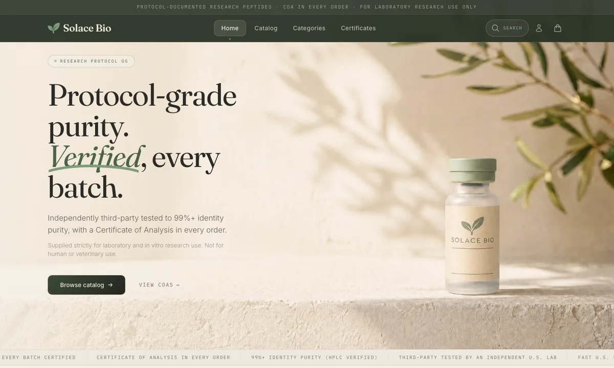
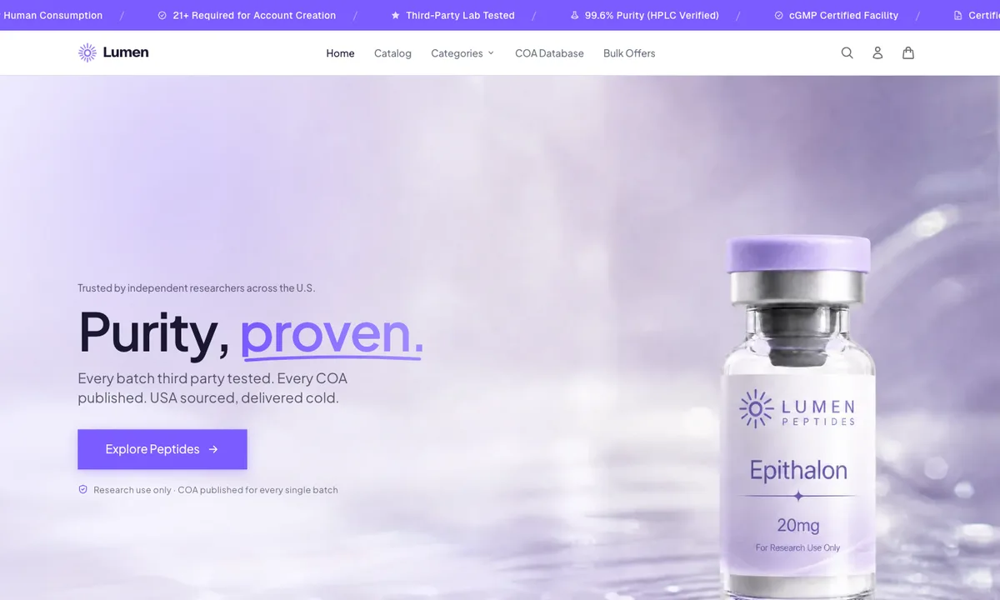
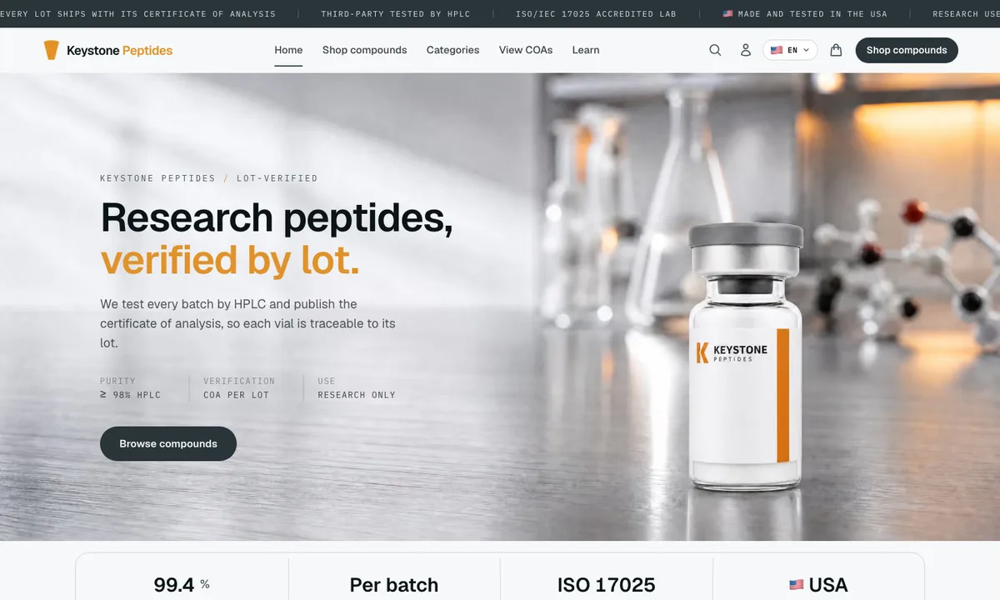
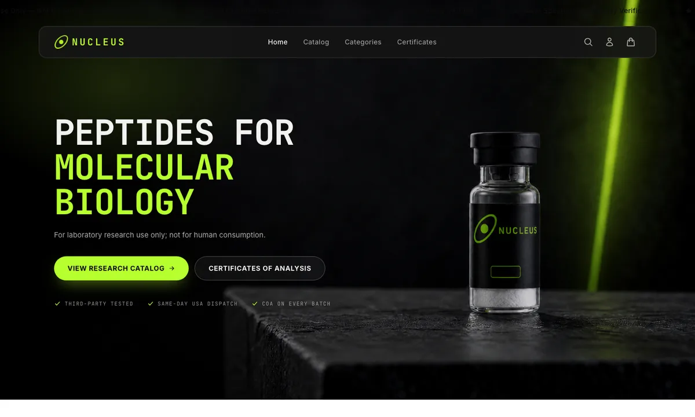
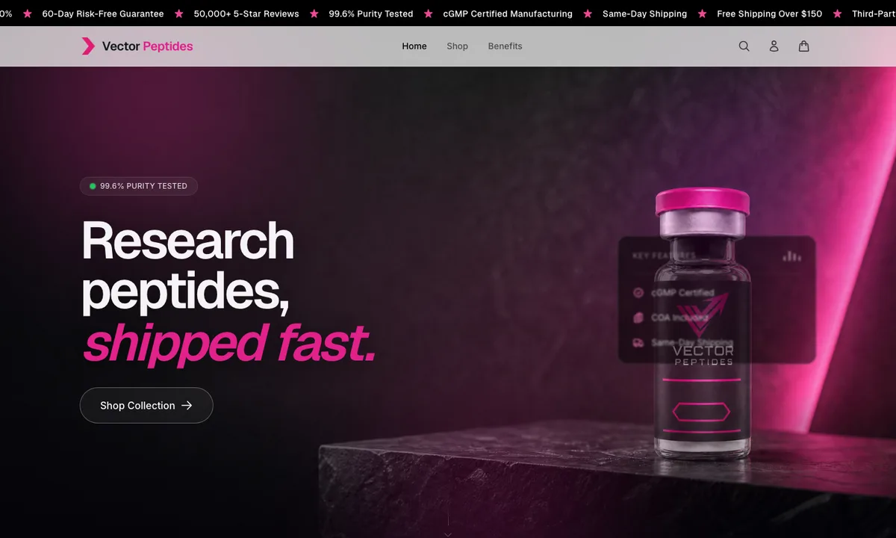

StoreKit
One storefront engine. Eight live brands.Every supplement storefront needs the same surfaces: hero, catalog, product page, cart, checkout, account, proof of testing, compliance gates. Rebuilding them per brand is slow, and copying one brand's site into another leaves colours and images bleeding through.
StoreKit is a tokenized component system where a brand is one file. Edit tokens.css and the same components come out as a different store. No hex values live in components. Eight reference brands prove the range.
- 8 storefronts live on Vercel
- 114 brand-consistent product images
- Next.js 15, Tailwind preset, Turborepo
- Catalog snapshots, zero cross-brand leaks








Same components. Different Vanta Bio.Open this store ↗